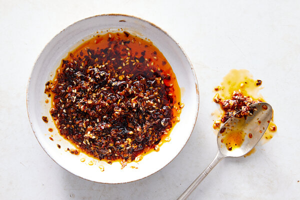

Chili Crisp

This is a recipe for the popular Chinese condiment known as chili crisp. Feel free to alter this recipe to your taste. You can use more or less spice, vary the amount of sugar, add a little MSG, or make tons of other iterations. There's not just one correct way to make chili crisp.
This condiment is extremely versatile. Sprinkle some on your eggs. Top your pasta with it. Dip your tofu into it. Pour a little on your rice. The possibilities are endless.
INGREDIENTS
- 1/2 cup of any vegetable oil
- 1/4 cup of dried minced onion
- 1 tsp of sugar
- 1 1/3 tsps of kosher salt
- 1/3 cup of crushed dried chili or red pepper flakes
- 3 Tbsps of sesame seeds
- 1 tsp of ground Szechuan peppercorns
DIRECTIONS
- heat the oil in a saucepan
- meanwhile, add all of the dry ingredients into a large shatterproof glass measuring cup
- just before the oil starts to smoke, remove it from the heat and pour it slowly over the dry ingredients being careful not to splash or spill
- let the mixture sit until it reaches room temperature
- transfer the chili crisp to a lidded jar
- enjoy!